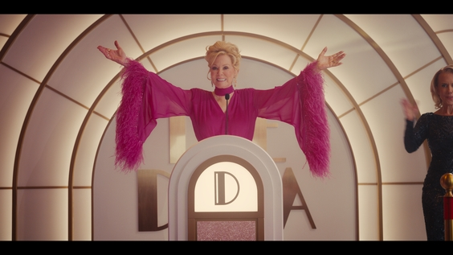
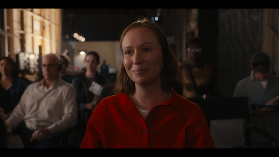
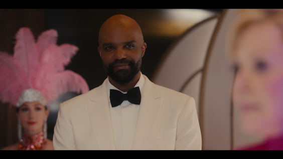
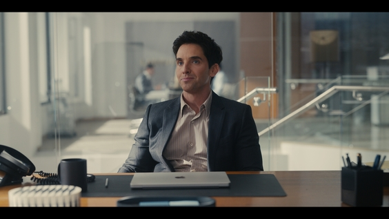
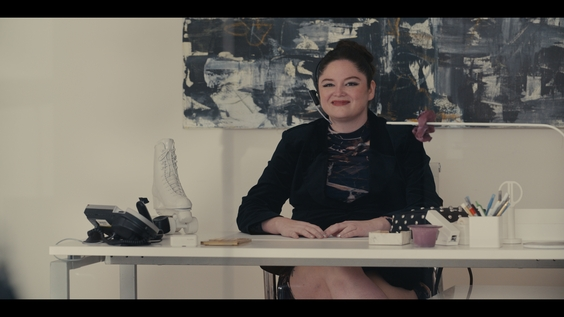
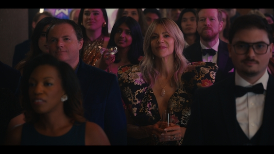

THE LEGEND
Deborah Vance
黛博拉 · 喜剧演员Jean Smart 饰
从驻场舞台到电视荧幕，她在喜剧行业打拼多年。机敏、强势、极度自律，把事业牢牢握在手里，也常把控制带入最亲近的关系。
人物小记
她能看见 Ava 的才华，却未必总愿意让出决定权。两人的创作合作，也是一场持续变化的权力较量。
BEHIND THE PUNCHLINE
从拉斯维加斯的聚光灯下，走向一场谁也没预料到的合作。
Deborah Vance 是拉斯维加斯的喜剧传奇。她拥有舞台、名气和一整套生存法则，却也面临演出机会被削减的危机。另一边，年轻编剧 Ava 因一条惹出争议的推文失去工作，急需一次重新开始的机会。
共同的经纪人把她们推到一起：Ava 为 Deborah 写新段子，Deborah 则带她进入一个耀眼、严苛又充满交易的喜剧世界。年龄、品味、工作方式，她们几乎处处相反；对笑话的敏感和对创作的执念，又让她们一次次回到同一张桌前。
主创 Lucia Aniello · Paul W. Downs · Jen Statsky
主演 Jean Smart · Hannah Einbinder
演艺生涯遭遇瓶颈的 Deborah，遇上急需工作的 Ava。她们从互不服气的雇佣关系开始，在打磨新段子的过程中逐渐看见对方，也触及各自不愿被碰到的旧伤。
THE PEOPLE AROUND THE STAGE
两位写手，以及与她们一起维系这场演出的人。

THE LEGEND
黛博拉 · 喜剧演员Jean Smart 饰
从驻场舞台到电视荧幕，她在喜剧行业打拼多年。机敏、强势、极度自律，把事业牢牢握在手里，也常把控制带入最亲近的关系。
她能看见 Ava 的才华，却未必总愿意让出决定权。两人的创作合作，也是一场持续变化的权力较量。

THE WRITER
艾娃 · 喜剧编剧Hannah Einbinder 饰
一位嘴快、敏锐、带着理想和棱角的年轻写手。她挑战 Deborah 的老办法，也在工作中学会，才华之外还需要为自己争取位置。

THE RIGHT HAND
马库斯 · 事业管理者Carl Clemons-Hopkins 饰
Deborah 商业版图中的可靠支柱，负责把舞台背后的大小事务运转起来。习惯照顾事业的他，也需要重新理解自己的生活和边界。
从商业安排到日程管理，Marcus 让我们看见，传奇的背后还有许多维持它的人。

THE AGENT
吉米 · 经纪人Paul W. Downs 饰
同时代理 Deborah 和 Ava，是促成她们合作的人。他在客户的野心、行业的规则和搭档的突发奇想之间，努力把事情办成。
他和 Kayla 的合作，构成了主线之外另一组节奏独特的喜剧搭档。

THE WILD CARD
凯拉 · 吉米的工作搭档Megan Stalter 饰
出场方式常常出人意料，做事也不按行业的标准剧本来。看似混乱的热情，有时会替搭档打开一条意料之外的路。
Kayla 让经纪行业的紧张时刻，随时可能变成一段失控的喜剧。

THE DAUGHTER
黛博拉的女儿Kaitlin Olson 饰
她与母亲的关系，承载着事业光环之外的家庭旧账。在玩笑、抱怨和靠近之间，DJ 始终在寻找自己的位置。
这条母女关系线，让 Deborah 在舞台上的强大与生活里的局限同时显现。
CONNECTED, COMPLICATED
雇主与写手
创作搭档 · 彼此的对手
Jimmy & Kayla经纪与职业支持
Marcus事业管理与长期协作
DJDeborah 的女儿
RECOGNITION, ON AND OFF STAGE
一部关于喜剧创作的剧，也让作品与表演被更多人看见。
THE SERIES
2024 年艾美奖，让《绝望写手》的创作团队站上领奖台。剧集亦获得 2022、2025 年金球奖音乐／喜剧类最佳剧集。
艾美奖记录 · 金球奖记录JEAN SMART / DEBORAH
凭 Deborah Vance 一角，Jean Smart 在 2021、2022、2024、2025、2026 年获得喜剧类最佳女主角。
查看本剧获奖年份HANNAH EINBINDER / AVA
2025 年，Hannah Einbinder 凭 Ava Daniels 获得艾美奖与评论家选择奖的喜剧类最佳女配角。
艾美奖记录 · 评论家选择奖记录| 获奖年份 | 奖项 | 类别与获奖者 | 出处 |
|---|---|---|---|
| 2024 | 艾美奖 | 最佳喜剧剧集《绝望写手》 | 官方记录 |
| 2021 · 2022 · 2024 2025 · 2026 | 艾美奖 | 喜剧类最佳女主角Jean Smart · Deborah Vance | 官方记录 |
| 2025 | 艾美奖 | 喜剧类最佳女配角Hannah Einbinder · Ava Daniels | 官方记录 |
| 2022 | 艾美奖 | 喜剧类最佳客串女演员Laurie Metcalf · Weed | 官方记录 |
| 2021 | 艾美奖 | 喜剧类最佳导演Lucia Aniello · 首集《There Is No Line》 | 官方记录 |
| 2022 · 2025 | 金球奖 | 最佳音乐／喜剧类剧集《绝望写手》 | 官方记录 |
| 2022 · 2025 · 2026 | 金球奖 | 音乐／喜剧类剧集最佳女主角Jean Smart · Deborah Vance | 官方记录 |
| 2023 · 2025 | 演员工会奖 | 喜剧类剧集最佳女演员Jean Smart · Deborah Vance | 2023 · 2025 |
| 2025 | 评论家选择奖 | 最佳喜剧剧集《绝望写手》 | 官方记录 |
| 2025 · 2026 | 评论家选择奖 | 喜剧类最佳女主角Jean Smart · Deborah Vance | 2025 · 2026 |
| 2025 | 评论家选择奖 | 喜剧类最佳女配角Hannah Einbinder · Ava Daniels | 官方记录 |
| 2021 年度 | 皮博迪奖 | 年度获奖作品《绝望写手》 | 官方记录 |
以上为主要获奖记录，年份按颁奖年份列示；皮博迪奖按官方标注的获奖年度列示。累计艾美奖数量涵盖本剧的表演、创作及幕后类别，个人条目仅列凭本剧获得的奖项。
MORE THAN A PUNCHLINE
笑话是她们的工作，也是她们理解彼此的语言。
一个段子能否成立，最终要在观众面前接受检验。Deborah 的经验与 Ava 的新视角不断碰撞，让创作成为两人交流、争执和重新靠近的共同场所。
关键词：经验 · 直觉 · 自我更新舞台上的位置、写手的署名、一次机会的归属，都牵涉权力。剧集反复追问：欣赏一个人的才华，是否也意味着愿意给予她相应的位置？
关键词：职业 · 认可 · 决定权合作让她们了解对方，也让伤害变得更精准。雇佣关系、师徒关系与亲密感交织在一起，谁也无法轻易为这段关系画出一条清晰的边界。
关键词：依赖 · 边界 · 彼此成就互相欣赏，互相伤害，
又彼此成就。
IN THE SPOTLIGHT
舞台、后台与旅途。点开图片，停留一会儿。
OFFICIAL TRAILER
前往 HBO Max 官方频道观看第五季预告；想从头认识这部剧，也可以浏览官方剧集资料。
观看官方预告官方剧集资料ORIGINAL SOUNDTRACK
原声作曲 · Carlos Rafael Rivera
AFTER THE LAUGHTER
介绍之外，留下一些转瞬即逝、却想记住的感受。
DEBORAH & AVA
Deborah 的震惊里，我还读到了一点欣赏。
涉及第三季第 9 集结尾剧情第三季结尾，Deborah 大概以为，就算不给 Ava 首席编剧的位置，她也不能怎么样。她已经习惯了掌握主动权，也习惯了 Ava 最后还是会留下。
结果，Ava 反过来将了她一军。
我看到这里的第一反应就是：哇塞，她真的学到了。她跟在 Deborah 身边这么久，看着她怎样争取机会、怎样拿捏局面，现在终于把学到的招数用到了自己身上，甚至用来反击 Deborah。那种爽感里，有一种完全没预料到的惊喜。我突然很清楚地看见了 Ava 的成长。
Deborah 的反应也让我很喜欢。在我看来，她是震惊的，但震惊里又有一点欣赏。她没想到 Ava 真的敢这么做，更没想到，自己教会她的东西会在这一刻回到自己面前。那个她以为还能拿捏的人，已经能够回击她了。
我喜欢 Deborah 和 Ava 之间互相欣赏、互相伤害，又彼此成就的关系。她们靠得很近，足以看见对方的才华，也足以知道哪里最能刺痛对方。这一场交锋把这些东西放在了一起：Ava 的反击里能看见 Deborah 的影响，而我读到的那一点欣赏，又让 Deborah 的震惊变得更有意思。
这也是这个结尾让我意外的地方。看这部剧的过程中，我有时已经能猜到编剧会怎样让两人的分歧走向一个折中的、彼此都能接受的结果。但到了这里，Ava 真的出手了。她开始为自己争取位置，Deborah 也得面对她已经成长起来这件事。看到这一刻，我确实觉得很爽。
最后一季，Deborah 和 Ava 为了争取一件衣服假扮伴侣的那一段，真的给我笑惨了。
基本信息、演员与预告参考 WBD / HBO Max 官方资料；第三季结尾参考 TheWrap 演员访谈。奖项在“获奖荣誉”区提供官方获奖记录。主题文字是本站的阅读分析，感想整理自站主的实际表达。
剧照来自 HBO Max 官方公开剧照缩略图，相关权利归原权利人；舞台与写作桌面为主题意象配图。音乐使用作曲家官方专辑外链，页面保持静音。
《绝望写手》非官方剧集介绍与个人学习作品。剧名、人物及剧照相关权利归各自权利人所有。内容涉及部分剧情，请按需展开感想。